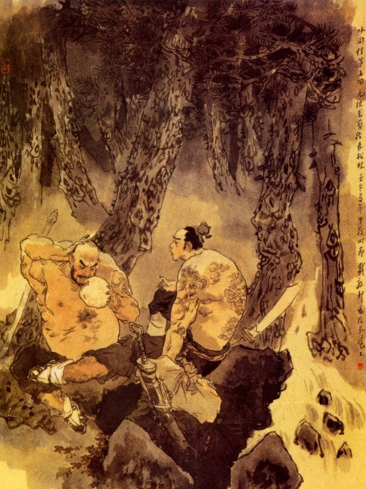
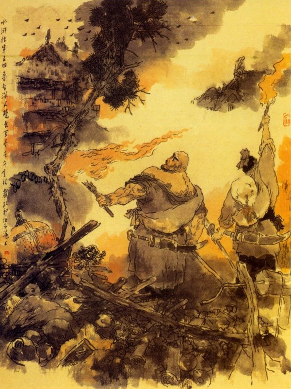
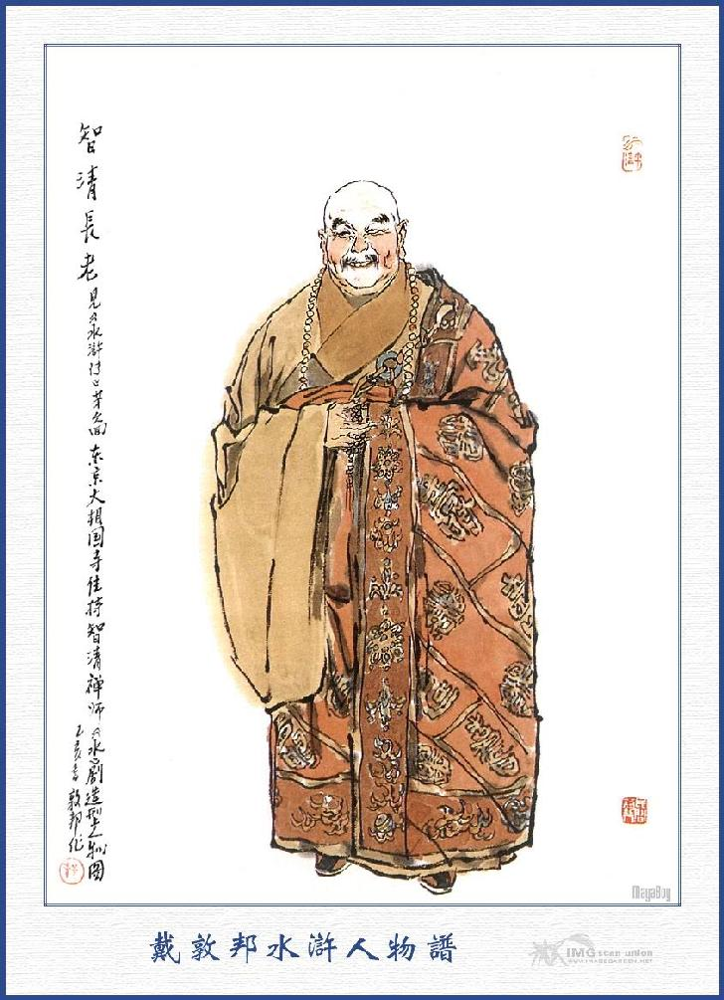

Lỗ Trí Thâm từ khi bước chân khỏi núi Đào Hoa một mình mãi miết đi từ sáng đến trưa có tơi năm sáu mươi dặm đường, trong bụng đã hơi hơi đói, muốn tìm vào một hàng quán ăn cơm, nhưng trông xung quanh không thấy. Chợt đâu nghe có tiếng leng keng gần đó, chàng liền đoán chắc là tất có chùa chiền cung quán chi đây; liền vơ vẩn loanh quanh tìm kiếm, vừa qua một cái sườn núi kia, chợt trông thấy có một khu rừng thông lớn, lại có một con đường núi đi vào. Chàng ta theo con đường núi ấy, được chừng nửa dặm, ngẩng trông lên thì thấy có một cái toà chùa cũ kỹ tồi tàn, bị gió thổi rung rinh ở đó. Lại gần tới cổng, có treo một bức biển sơn son thiếp vàng đề ba chữ "Chùa Ngõa Quan", đã mờ cũ rích. Chàng lại đi mươi bước nữa, qua một cái cầu đá con vào đến cửa Tam Quan thì thấy cánh cửa không có mà vắng ngắt vắng tanh không ai cả. Chàng lấy làm ngạc nhiên, "một chùa lớn mà sao bỏ tồi tàn như thế?" Liền lững thững đi vào phương trượng thì thấy ngổn ngang bẩn thỉu, toàn là cứt chim mà khóa cửa thì chăng toàn tơ nhện. Bấy giờ Trí Thâm lấy thiền trượng đập xuống đất mà kêu lên rằng:
- Có ai trong ấy cho sư tôi vào trọ.
Chàng kêu đến mấy tiếng đồng hồ cũng không thấy ai thưa, bèn lững thững đi mãi cho vào đến bếp. Vào thấy nồi niêu không có, đầu rau đầu lóc cũng không, vắng ngắt như chùa Bà Đanh vậy. Trí Thâm bèn cởi khăn gói ra để xuống trước mặt bàn thờ Giám Trai Sứ Giả rồi xách cây trượng đi lùng khắp cả mọi nơi. Khi đến đằng sau chùa, thấy một gian nhà cỏ, có mấy vị sư già đương ngồi, trông mặt người nào người ấy vàng vọt xanh xao, bất thành hình thể. Trí Thâm liền quát lên rằng:
- Các sư ở đây vô lý quá, tôi gọi mãi sao không ai thèm trả lời cả?
Lũ sư ấy tay vẫy mà bảo rằng:
- Chớ nói to.
Trí Thâm nói:
- Tôi là sư nhà chùa ở xa đến đây, có việc gì mà sợ?
- Chúng tôi ba hôm nay không có hạt cơm nào vào bụng, còn lấy đâu mà đãi người.
- Tôi ở tận Ngũ Đài Sơn sang đây, nếu có cháo lão gì, cho tôi một bát cho đỡ đói vậy.
- Người qua đến đây, lẽ ra chúng tôi phải thiết cơm là phải, người ngặt vì trong chùa chúng tôi các sư bỏ đi mất cả, không còn có một hột lương nào, cho nên chúng tôi cũng phải nhịn đói đến ba hôm rồi đấy.
- Các sư nói lạ? Một cảnh chùa to thế này mà lại không có lương thực hay sao?
- Đây vẫn đã đành không phải một cảnh tầm thường, nhưng mới đây bị một ông hòa thượng, dẫn một người đạo nhân đến phá hoại mất cả rồi đuổi những chúng tăng đi, duy còn mấy chúng tôi già yếu, cho nên chịu nằm chết đói ở đây mà thôi.
- Không có lẽ một ông sư với một đạo nhân thì làm sao được? Sao các sư lại không lên quan mà tố cáo tội họ?
- Người không rõ, ở đây xa phủ xa huyện, quan quân cũng không cấm nổi họ, cho nên chỉ đánh giết ức người ta, hiện bây giờ đương ở đằng sau phương trượng đó.
- Tên tuổi họ là gì?
- Ông sư đó tên là Thôi Đạo Thành, pháp hiệu Sinh Thiết Phật, còn đạo nhân tên là Khưu Tiểu Ất, hiệu là Phi Thiên Đích Thoa, hai người ấy chẳng qua là mượn tiếng nhà chùa, che mắt thế gian để cướp bóc thế thôi.
Trí Thâm đương nghe chuyện thì thấy có mùi thơm thoang thoảng liền vác trượng đi đến lối sau, chợt thấy trên bếp có cái nồi đậy lá, hơi nước bốc lên ngùn ngụt, bèn mãi mốt cất lên để xem thì té ra cháo đương hầm ở đó. Trí Thâm cả giận mắng rằng:
- Các sư tệ quá, vừa rồi nói rằng: Ba hôm nay không được ăn, sao mà nồi cháo ở đó? Người tu hành mà dám ăn không nói có như thế sao?
Lũ sư thấy vậy thì luống cuống kêu cứu rồi vội vàng vác bát vác thùng đến mà cướp cháo đi. Trí Thâm không biết làm sao được, nhìn quanh nhìn quẩn thấy một cái chậu vỡ bỏ ở bên cạnh bếp, liền chạy vào nhặt nắm lá lau sạch cái chậu rồi bưng nồi cháo mà trút tuộc cả vào đấy. Các sư kia chạy đến tranh múc thì bị Trí Thâm đá lộn cả ra ngoài rồi vừa bưng chậu cháo lên, vừa hút sùm sụp.
Lũ sư thấy vậy phàn nàn rằng:
- Nhịn đói ba ngày trời, nay mới kiếm được mấy hột gạo nấu cháo mà người ta lại ăn cả như thế thì thực khổ cho chúng tôi.
Trí Thâm vừa húp được mấy húp, nghe thấy các sư phàn nàn như thế, liền đặt xuống mà không ăn nữa.
Chợt ở phía ngoài có tiếng hát nghêu ngao, Trí Thâm bèn lau tay sạch sẽ, cầm lấy cây trượng, chạy xoăn xoăn ra chỗ tường thủng để nom thì thấy một đạo nhân gánh một cái gánh, một bên có cái rổ thò con cá ra ngoài và có gói thịt để ở trên, còn một bên là bình rượu đậy cái lá sen cẩn thận. Đạo nhân vai thì gánh, miệng thì lên bổng xuống trầm, vừa đi vừa hát rằng:
"Đấy đông, đây ở bên tây,
Đấy thì không vợ, đây nay không chồng.
Con trai không vợ đã xong
Con gái không chồng buồn lắm em ơi! "
Bấy giờ lão sư cũng ở trong đổ xô ra, lấy tay trỏ mà bảo Trí Thâm rằng:
- Người đạo nhân ấy chính là Phi Thiên Đích Thoa đó.
Trí Thâm nghe nói liền vác gậy chạy theo sau đạo nhân, đạo nhân không biết, cứ xăm xăm đi vào tường phía sau phương trượng, Trí Thâm lẻn vào thì có một cái bàn, kê dưới gốc cây hòe, trên bàn mấy món đồ ăn, ba cái chén ba đôi đũa, một vị hòa thượng to béo ngồi ở giữa, một người con gái trẻ ngồi bên, còn một bên thì đạo nhân, đặt gánh rồi ngồi ở đó. Khi ấy hòa thượng trông ra thấy Lỗ Trí Thâm, giật mình đứng dậy nói rằng:
- Xin mời sư huynh ngồi chơi một thể uống rượu cho vui.
Trí Thâm giở thiền trượng ra mà bảo nhà sư kia rằng:
- Sao nhà ngươi lại dám phá hoại chùa chiền đây như thế?
- Xin sư huynh đây hãy bớt giận, ngồi chơi tiểu tăng kể chuyện người nghe.
Trí Thâm trợn mắt hỏi:
- Chuyện sao, ngươi nói mau?
- Nguyên trước chùa đây vẫn là sang trọng mà ruộng đất cũng nhiều, sau chẳng may bị lũ sư già, đương ngồi dưới chùa kia, chỉ uống rượu nuôi gái, sư cụ cấm họ không nổi rồi họ tức mình đuổi cả sư cụ đi. Bởi thế chư tăng bỏ đi mất cả, còn chùa chiền ngày một tan hoang, ruộng đất cũng không còn nữa, hiện nay tiểu tăng cùng đạo nhân này đến đây là cốt mong để sửa lại đó mà thôi.
- Vậy thì người đàn bà này là thế nào? Mà lại uống rượu ở đây?
- Thưa sư huynh người đàn bà này là con gái ông Vương Kim Hữu ở làng gần đây, nguyên trước ông ta bố thí vào chùa rất nhiều, nay chẳng may nhà cửa sa sút mà chồng nàng lại bị đau ốm, cho nên nàng phải chạy sang đây vay gạo. Vì thế chúng tôi cũng nghĩ đến công đức ngày xưa mà mời xơi chén rượu, chứ không có điều chi khác cả, xin sư huynh đừng có nghe lũ súc sinh kia, họ thêm đặt nói càn dở lắm.
Trí Thâm thấy nhà sư nói năng ra vẻ thực thà, cẩn thận thì cũng hơi có lý thì lại xăm xăm vác gậy mà quay sang lối nhà bếp, để đi tìm lũ sư già.
Bấy giờ lũ sư già vừa mới ăn cháo xong còn ngồi ở đó, Trí Thâm hằm hằm đi đến trỏ vào mặt mà nói rằng:
- Té ra chính lũ các anh phá hoại chùa này, thế mà các anh còn nói dối ta đó.
Lũ sư già cả kinh nói rằng:
- Chết nỗi! Sư huynh chớ nghe lão sư ấy, chính lão ta đương nuôi người con gái ở trong chùa ấy. Vừa rồi sư huynh đến nơi mà họ không dám làm gì là vì họ trông thấy khẩu giới đao và cây thiền trượng mà trong tay họ không sẵn khí giới đấy thôi, không tin sư huynh thử đến lần nữa xem sao? Vả chăng bọn họ còn có thật thà chè chén như thế, chứ chúng tôi đây cháo cũng không có mà ăn, còn lấy đâu mà phung phí.
Trí Thâm nghe nói, cho là bọn này nói phải, liền mãi mốt vác trượng đến chỗ cũ xem sao? Quả nhiên khi tới nơi thì cửa đã đóng chặt, không sao mà mở ra được. Trí Thâm cả giận lấy chân người đạp một cái, tung hẳn cửa ra rồi bước thẳng vào.
Bấy giờ Sinh Thiết Phật Thôi Đạo Thành, thấy Trí Thâm vào, liền chống thanh đao từ dưới gốc cây hòe hiện ra để chống cự. Trí Thâm thét lên một tiếng rất to giơ trượng lên đánh, đôi bên địch nhau có tới 14, 15 hiệp, bên kia Thôi Đạo Thành biết thế không thể địch nổi, chỉ che đỡ quanh co thừa cơ chạy thoát, Khưu Đạo Nhân thấy vậy, liền vác đao xông ra đằng sau Trí Thâm để đánh. Trí Thâm nghe có tiếng người chạy ra đằng sau, liền quay lại nom thấy Đạo Nhân thì quát lên "Được!" rồi lại múa gậy đánh nhau với cả hai người, có tới 10 hiệp nữa. Bấy giờ Lỗ Trí Thâm vừa phần trong bụng đương đói, vừa phần đường sá mệt nhọc, lại vừa phần đối địch với hai người đương sức thì khó lòng mà thắng được, liền thừa cơ quay trượng đỡ lui trở ra. Hai người kia vác đao đuổi đến cổng ngoài, Trí Thâm quay lại đánh nhau mấy hiệp nữa rồi chạy, hai tên kia lại đuổi mãi đến Cầu Đá mới thôi. Trí Thâm chạy được quãng xa thì tinh thần đã hơi yên định thì chợt nghĩ đến cái khăn gói còn để ở chỗ bàn thờ Giám Trai Sứ Giả, nếu không lấy được thì tất là nguy hiểm đến nơi mà nếu trở lại thì khó lòng mà sống thoát được, với hai tay ấy. Chàng vừa nghĩ vừa đi lững thững qua mấy dặm đường, đến một khu rừng lớn, trông rất rậm rạp gớm ghê, liền đứng dừng lại để xem. Chợt trông thấy có người nom dòm, ở trong rừng mà khạc ra một tiếng to rồi lại đi ngoặt trở vào; Trí Thâm thấy vậy, liền tự nghĩ một mình rằng:
- Thằng cha này có lẽ nó nấp nom để cướp bóc ở đây, nhưng nom thấy ta là nhà sư thì chả ăn thua gì, cho nên khạc nhổ đây hẳn? A được! Ta đương bực xả trong mình, nó gặp ta thì hay lắm, để ta vào thử xem sao? Nghĩ xong vung cây trượng đi thẳng vào trong rừng, quát to lên mà hỏi rằng:
- Thằng nào ở trong rừng ấy ra đây!
Anh chàng nọ ở trong rừng nghe thấy tiếng hỏi thì cả cười mà bảo rằng:
- Ta đã im tiếng, thế mà nó lại còn tìm đến ta à? Được lắm!
Nói xong vác đao sồng sộc đi ra rồi cũng quát lên rằng:
- Thằng kia! Mầy tất chết, tự nhiên vô cớ thế mà mày tìm đến tao, chứ tao không tìm đến mày nhé!
Trí Thâm nge nói liền vác trượng xông vào đánh mà nói rằng:
- Rồi mày sẽ biết tay tao.
Bên kia cũng đưa đao ra đỡ, song lại hơi có ý rụt rè mà bảo rằng:
- Tôi nghe tiếng nhà sư quen lắm, không biết rằng tên họ là chi?
Trí Thâm cáu lên mà nói rằng:
- Ta hãy đấu với ngươi 300 hiệp đã rồi hãy nói tên.
Anh kia cũng phát giận, múa đao đánh luôn không nể, đôi bên đánh nhau độ 10 hiệp thì anh kia kêu lên rằng:
- Hãy khoan, tôi nói câu này đã.
Nói xong hai người cùng nhảy xa nhau rồi anh chàng kia lại hỏi:
- Anh tên họ là gì, tôi nghe tiếng quen lắm, anh hãy nói cho nghe.
Bấy giờ Trí Thâm kể đến tên họ cho anh kia nghe, anh kia liền vất đao xuống đất vái chào mà nói rằng:

- Quan bác có nhận được Sử Tiến đây không?
Trí Thâm nghe nói cả cười mà bảo rằng:
- Tưởng là ai; té ra Sử Đại Lang đấy à?
Đoạn rồi vái chào Sử Tiến và hai người cùng dắt vào rừng mà nói chuyện.
Trí Thâm hỏi:
- Từ khi ở Vị Châu tương biệt rồi quan bác đi đâu thế?
Sử Tiến đáp:
- Hôm đó từ biệt với ngài rồi nghe nói hôm sau ngài đánh chết Trịnh Đồ mà đảng công sai lại dò hỏi có tình nghi cho tôi, vậy phải bỏ đất Vị Châu mà sang Diên An Phủ. Bất đồ đi tới Diên An không gặp sư phụ tôi ở đó, lại đành phải sang Bắc Kinh, ở được ít lâu thì tiền lương cạn hết, nên phải đến đây kiếm lợi. Còn về chuyện quan bác thì sao?
Trí Thâm liền kể đầu đuôi chuyện mình, nói cặn kẽ cho Sử Tiến nghe. Sử Tiến nghe nói biết rằng Trí Thâm hiện chưa có cơm ăn, liền đem thịt khô bánh nướng đưa cho Trí Thâm ăn mà bảo rằng:
- Ăn xong ta sẽ vào chùa mà lấy khăn gói về, bằng lũ kia có ngăn trở thì ta kết liễu ngay cho nó một lượt là xong.
Trí Thâm gật gù khen phải, liền cùng ngồi ăn bánh với Sử Tiến. Khi ăn uống xong, hai người đều mang theo khí giới đi thẳng đến chùa Ngõa Quan. Vừa tới chỗ cầu Đá, đã thấy Thôi Hòa Thượng và Khưu Đạo Nhân còn ngồi ở đó. Trí Thâm liền quát lên rằng:
- Chúng bây đến đây, bây giờ ta quyết sống mái với chúng bây một phen.
Thôi Hòa Thượng nghe nói thì cười mà đáp rằng:
- Ngươi chính là đứa bại tướng trong tay ta, thế mà dám về đây nữa à?
Nói vừa dứt lời thì Trí Thâm đã múa trượng xông lên cầu đẻ đánh, bên kia hòa thượng cũng chạy xuống múa đao để đỡ. Bấy giờ Trí Thâm vừa phần có Sử Tiến đi đón, lại vừa phần bụng đã hơi no, cho nên tinh thần khí lực hăng hái hơn trước, anh kia không thể nào địch nổi được nữa. Đánh nhau độ 8, 9 hiệp, Thôi Hòa Thượng nghe thế hơi núng, toan giật lùi để kiếm đường mà tháo. Bấy giờ Khưu Đạo Nhân thấy vậy liền múa đao ra đánh cứu Thôi Hòa Thượng, bất đồ bên này Sử Tiến đương đứng nấp ở gốc cây, nhảy bổ ra thét lên rằng:
- Đánh chết hai thằng này đi.
Nói xong múa đao đến đanh Khưu Đạo Nhân, Trí Thâm được Sử Tiến ra giúp, gắng sức thét lên một tiếng rồi vung tay đánh cho Thôi Hòa Thượng một thiền trượng ngã lăn xuống cầu. Khưu Đạo Nhân thấy hòa thượng bị ngã thì trong bụng hơi núng, không có ý ham đánh, liền thừa cơ toan nhảy ra để chạy, bất đồ bị Sử Tiến thét lên, đâm một nhát vào lưng ngã lăn xuống đất. Đằng kia Trí Thâm thấy hòa thượng bị ngã lăn xuống cầu thì mãi mốt chạy theo, đánh xuống cho mấy gậy nữa, chết cứng ra đấy mới thôi.
Mới hay:
Những quân tàn ác trên đời,
Mình làm mình chịu tội trời ai mang?
Gươm hùng còn vết sáng choang,
Nghìn thu khiến kẻ vô lương kinh hồn!
Bấy giờ Trí Thâm cùng Sử Tiến trói hai cái xác vô lương kia vất xuống khe núi rồi hai người cùng đi vào chùa, thẳng xuống dưới bếp lấy tay nải, khoác lên vai mà quảy ra đi, tìm vào chỗ gốc cây hòe trước. Khi vào tới nơi thì người đàn bà lúc nãy đã đâm đầu xuống giếng tự tử. Đoạn hai người đi lần vào tới một chỗ 7, 8 gian nhà bỏ không vắng vẻ thì chỉ thấy mấy đống xống áo vất lung tung ra ờ giường. Sử Tiến giở gói ra xem, thấy toàn thị áo xiêm vàng bạc ở trong, bèn chọn lấy một gói cẩn thận rồi quay vào gian bếp ở đây, lục lấy cá thịt và mọi thứ đem ra nấu nướng ăn uống với nhau. Ăn uống xong rồi, hai người đem lửa ra đốt cháy chùa Ngõa Quan làm sáng rực góc trời, vì sơn tự tồi tàn, bị những ác tăng lui tới làm bậy, nên đốt bỏ không tiếc rồi hai người kéo nhau ra ngoài, mỗi người một gói, khoác lên vai, đi khỏi sơn tự.

Đêm khuya nước thẳm non sâu,
Thanh gươm cây trượng biết đâu là nhà?
Hai người lần mò suốt đêm hôm ấy, mãi tới lúc trời tảng sáng mới đến một nơi xóm làng kia, liền tìm vào một tửu điếm ở bên cầu để trọ, khi vào tửu điếm liền sai tửu bảo đem rượu thịt lên, hai người ngồi đánh chén nói chuyện với nhau.
Ăn uống xong rồi, Trí Thâm hỏi Sử Tiến:
- Bác định đi đâu bây giờ?
- Tôi bây giờ có lẽ lại phải về Thiếu Hoa Sơn ở với đám Chu Vũ, Dương Xuân ít bữa rồi thế nào sẽ liệu về sau.
Trí Thâm nghe nói, liền mở khăn gói, lấy ít đồ vàng bạc đưa thêm cho Sử Tiến rồi trả tiền hàng mà cùng nhau ra đi. Ước chừng dăm bảy dăm đường, mới tới một nơi ngã ba gần đó, Trí Thâm đứng dừng lại bảo Sử Tiến rằng:
- Đến đây là nơi chia bước, tôi sang Đông Kinh lối này mà bác về Thiếu Hoa Sơn lối ấy, vậy sau đây nếu có cơ hội gì, ta sẽ thông tin cho nhau cùng biết.
Sử Tiến liền bái biệt Trí Thâm rồi mỗi người chia tay một ngả.
Cho hay là kiếp giang hồ,
Nay tan mai hợp hẹn hò biết đâu?
Từ khi Lỗ Trí Thâm chia tay cùng Sử Tiến rồi đi 7, 8 ngày đường nữa mới tới Đông Kinh, liền hỏi thăm vào chùa Đại Tướng Quốc, để đưa thư lên yết kiến sư cụ. Khi vào tới chùa, Tri Khách Tăng, trông thấy Trí Thâm mặt mũi hung tợn, vác một cây thiền trượng bằng sắt, đeo một thanh giới đao, khoác một khăn gói rất lớn, trong bụng đã gờm gờm kinh sợ liền hỏi:
- Sư huynh ở đâu tới đây?
Trí Thâm đặt khăn gói thiền trượng xuống rồi vái chào mà nói rằng:
- Tôi ở Ngũ Đài Sơn có giấy của sư cụ Trí Chân tôi gửi sang, để xin việc sư cụ ở đây!
- Nếu có giấy của sư cụ Trí Chân thì xin mời sư huynh vào trong phương trượng.
Nói đoạn dẫn Trí Thâm vào phương trượng. Tới nơi Trí Thâm cổi khăn gói lấy bức thơ ra cầm ở tay để đợi sư cụ đến. Tri Khách Tăng thấy vậy, bảo Trí Thâm rằng:
- Bây giờ sư cụ đã sắp đến, sao sư huynh không cởi bỏ giới đao ra mà cầm hương ở tay cho có phép.

PHƯƠNG TRƯỢNG TRÍ THANH
Trí Thâm nghe nói mới mãi mốt cởi giới đao ra, để vào một chỗ lấy hương ra đốt cầm ở tay mà đứng đợi. Khi sư cụ Trí Thanh đến phương trượng, Tri Khách Tăng liền đưa Trí Thâm đến trước mặt bảo quỳ xuống mà đưa thư lên. Sư cụ cầm lấy thư, bốc ra xem thấy trong thư kể đầu đuôi công việc Lỗ Trí Thâm và xin thế nào cũng cho một việc làm ở trong chùa đó. Sư cụ Trí Thanh xem thư xong, quay ra bảo Trí Thâm rằng:
- Nhà sư hãy ra nghĩ ờ tăng đường ăn cơm nước đã.
Trí Thâm nghe nói lạy tạ sư cụ rồi vác khăn gói và giới đao, thiền trượng, theo đạo đồng đi ra tăng đường. Bấy giờ sư cụ Trí Thanh cho gọi chư tăng, đến tất cả phương trượng mà đem tình ý trong thư và nguyên ủy chuyện Trí Thâm, thuật kỹ cho chư tăng nghe và nói:
- Việc này nếu ta không nhận, tất là không tiện với sư huynh Trí Chân mà nếu nhận ra thì làm sao cho ổn? Trong thư sư huynh kể hết lỗi của Trí Thâm, khi còn ở Kinh Lược thì giết người như ngóe, đến khi xuất gia tu hành thì lại say sưa rượu chè, mấy phen náo động chúng tăng, nhưng lại dặn đi dặn lại nhờ ta thế nào cũng phải thu nạp mới xong, vậy thì các ngươi định sao?
Tri Khách Tăng nói:
- Cứ như con xem dáng anh ấy, không có chút gì ra vẻ tu hành hết thẩy, như vậy thì chùa ta dung làm sao được?
Đô Tự lại nói:
- Chúng con thiết nghĩ: Hiện nay ở nhà Giải Vũ ngoài cửa Toan Tảo, có một khu vườn rau của nhà chùa, xưa nay thường bị đám quân lính ở trong dinh, cùng hai mươi mấy đứa vô loại ở đây quấy nhiễu đuổi dê ngựa ra phá hoại cũng nhiều, nhà sư già ở đây khó lòng mà giữ nổi. Vậy bất nhược sư cụ sai người này đến ở đấy thì có lẽ được việc chăng?
Sư cụ Trí Thanh khen phải, liền cho người xuống tăng đường, triệu Trí Thâm lên. Khi Trí Thâm cơm nước vừa xong thì đã thấy đạo đồng đến gọi, liền mãi mốt lên hầu sư cụ. Lên tới phương trượng, sư cụ gọi Trí Thâm đến mà bảo rằng:
- Ta vâng lời sư huynh bên ấy giới thiệu, cho ngươi sang đây để làm việc, vậy hiện nay chùa ta có một vườn rau lớn ở bên kia nhạc miếu ngoài cửa thành, ta cho ngươi ra đấy coi giữ, cứ mỗi ngày bắt đám trồng vườn, phải nộp vào đây mười gánh rau, bao nhiêu thì để cho ngươi chi dụng, ngươi nghĩ sao?
Trí Thâm nói:
- Sư cụ cho tôi sang đây, sao người không cho tôi một chức Đô Thủ, Giám Tự gì mà lại bắt tôi làm đứa coi vườn như thế?
Bấy giờ một vị sư đứng bên cạnh đỡ lời sư cụ rằng:
- Sư huynh không biết! Sư huynh mới đến đây chưa có công lao gì, đã làm chức Giám Tự, Đô Thủ sao được?
- Đành vậy, nhưng tôi không muốn làm anh coi vườn, dẫu chót nữa cũng làm chức Đô Thủ, Giám Tự thì mới thích.
- Sư huynh ở đó một năm có khá thì mới được thăng làm chức Tháp Đầu rồi một năm nữa có khá, mới thăng Dục Thủ, lại một năm nữa có khá mới thăng làm Giám Thị.
Trí Thâm gật đầu nói:
- Nếu quả có ngày xuất thân được thì tôi cũng chịu khó làm vậy.
Sư cụ thấy Lỗ Trí Thâm đã ưng thuận liền lưu ở phương trượng rồi sai người viết bảng yết thị ra ngoài Giải Vũ để hôm sau bàn giao công việc.
Sáng hôm sau sư cụ viết thiếp pháp giao cho Lỗ Trí Thâm rồi sai hai nhà sư, đưa ra vườn sau ngoài Giải Vũ gần nơi cửa thành. Về phía bên tả vườn rau có 2, 3 tên du đãng cờ bạc, vẫn lẫn khuất loanh quanh để ăn cắp rau mà nuôi thân, chợt hôm ấy sang ăn cắp rau, trông thấy bảng yết thị: "Trong chùa Tướng Quốc sẽ cắt vị sư mới là Lỗ Trí Thâm ra trụ trì coi giữ, bắt đầu từ ngày mai trở đi, cấm không ai được ra vào đấy nữa". Liền tụ nhau lại mà bàn định rằng:
- Lão sư này mới đến, tất phải làm cho nó một trận rất kịch liệt, hễ thò ra là phải đánh ngay, để cho nó phục chúng ta mới được.
Trong bọn đó có anh nói rằng:
- Tôi có một cách này rất dịu, hắn mới đến đây, không lẽ nào mà kéo hắn ra đánh ngay được, vậy chúng ta cứ lặng yên tử tế, dụ hắn ra cạnh thùng phân, giả cách chào lạy tử tế rồi chạy đến nắm cẳng dúng xuống thùng phân, thế là nhanh nhẹn nhất.
Trong đảng nghe nói đều vỗ tay cho là phải, liền dự bị với nhau, để đợi khi Lỗ Trí Thâm tới. Khi Trí Thâm ra đến Giải Vũ, mang đồ hành lý và đao trượng cất vào một phòng rồi các người làm vườn đều đến chào hỏi mà giao các chìa khóa và các đồ vật cho Trí Thâm nhận lấy. Đoạn rồi hai vị sư đưa đường cho Trí Thâm, cùng các vị sư trụ trì ở đấy trước, đều từ giã đi về mà lưu Trí Thâm ở lại. Bấy giờ một mình Trí Thâm đi lững thững ra vườn dạo nom phong cảnh, chợt có 2, 3 mươi người, kẻ cầm rượu người cầm rau, tươi cười hớn hở mà nói với Trí Thâm rằng:
- Chúng tôi ở gần xóm đây, nghe tin người mới tu hành ở cảnh chùa vậy anh em rủ nhau đến chào mừng sư phụ.
Trí Thâm nghe nói, không biết là kế thuật gì, liền bảo rằng:
- Các anh có lòng tốt đến chào thì xin mời vào trong Giải Vũ nói chuyện.
Khi đó hai tên đầu đảng đám kia là Nhai Lão Thử Trương Tam và Thanh Thảo Sà Lý Tứ đứng gần chỗ thùng phân, sụp xuống đất lạy và mong cho Lỗ Trí Thâm đến đỡ dậy là thi hành cách kia. Lỗ Trí Thâm thấy vậy, trong lòng hơi ngờ mà nghĩ thầm rằng:
- Quân này lạ? Nó chào ta mà không đến gần ta, chẳng hay nó muốn vuốt râu hùm đây chăng? Nếu vậy thì ta thử đến xem sao rồi sẽ liệu cho một mẻ, để nó biết tay mới được.
Nghĩ đoạn liền xăm xăm đi đến chỗ gần thùng phân. Bấy giờ Trương Tam, Lý Tứ cả mừng nói rằng:
- Anh em chúng tôi lại mừng sư phụ xin sư phụ chứng giám cho.
Hai anh vừa nói vừa sán gần vào, anh thì bá chân bên nọ, anh thì bá tay bên kia, toan vật nhau xuống hố. Bất đồ hai anh chưa kịp giở chân tay đã bị Trí Thâm đá một cái, Lý Tứ ngã xuống thùng phân trước, còn Trương Tam co cẳng toan chạy cũng bị Trí Thâm đá một cái nữa xuống sau, đầy sùng sục ở trong thùng phân như bọ vậy. Lũ kia trông thấy vậy, đều sợ hết hồn toan kéo nhau để chạy, Trí Thâm quát lên rằng:
- Hễ đứa nào chạy là ta ném cả xuống thùng phân.
Bọn kia nghe thấy thế đều đứng im, không dám cựa quậy chi nữa.
Tấm thân trải mấy ba đào
Những phường ruồi nhặng ra vào sá chi?
Mấy phen sấm sét ra uy,
Chờ cho biết mặt Từ Bi mới là,
Rồi đây muôn dặm một nhà,
Tao phùng còn lắm phồn hoa còn nhiều
Cửa thiền gió thổi thông reo
Tòa sen ai có đợi chiều ai không!
Lời bàn của Thánh Thán
Tôi nói trước tả hai hồi này, không muốn cho liên tiếp ở đám bụi rừng, nhân biến ảo ra chuyện trong phòng cô dâu, để cách quãng ra vậy. Tác giả e ngại rằng tả hai hồi xảy chuyện liên tiếp ở trong rừng thì phải có một hồi với nhiều đoạn văn chẳng ở trong rừng, để cách quãng ra, đó là cái tài của tài tử viết ra văn vậy? Nếu cứ tả hai hồi liên tiếp chuyện xảy ra lại không một hồi ở quãng giữa khác đi thì đâu phải cái tài của tài tử? Xét một hồi này thấy tài bút pháp của tác giả Thi Nại Am trước sau đều tả chuyện xảy trong rừng, lại khéo lánh đi, không để phạm đến nhau có xem kỹ mới biết là khéo vậy. Ta đọc một thiên tả chùa Ngõa Quan, khôn xiết ngán ngao mà thán phục! Hỡi ôi! Việc của thế gian cũng như thế ư? Nại Am bỗng dưng tả ra chùa Ngõa Quan, khiến độc giả ngàn sau đọc đến, ai không biết đến Ngõa Quan; Nại Am lại bỗng dưng tả đốt chùa Ngõa Quan, khiến độc giả ngàn sau đọc đến, ai không biết đến cảnh thiêu chùa Ngõa Quan? Thế mà một hồi không bao nhiêu trang giấy, vì đâu có chuyện Ngõa Quan, lại vì đâu hết chuyện Ngõa Quan chỉ trong phút chốc mấy đời cũng trong tấn kịch đó ư! Lại như cầm sách này để ở trên bàn, ngồi ghế mà đọc, chỗ ngồi xem truyện với chỗ để truyện, có cách bao xa khi xem thế bỗng dưng thấy chuyện Ngõa Quan tráo trở đến như không thì non sông cũng trong giấc mộng đó ư! Hỡi ôi! Đem sách của họ Đại Hùng vậy phàm nhân đọc thì bảo rằng câu "Hương phong lăng hoa", khá đem vào thi liệu; Đem sách Bắc Tây Sương, cho thánh nhân xem thì bảo rằng khúc "Lâm Khứ Thu Ba", tỉnh ngộ trùng huyền. Hỡi ơi! Bậc hiền với kẻ ngu, dụng ý khác nhau, trong khi xem sách đã phân biệt như thế thì sách của Thi Nại Am cũng tùy người mà đọc nổi vậy. Suốt thiên này chỉ tả bước hành trình của Lỗ Đạt mà đột nhiên thấy Sử Tiến ở đâu bay lại rồi đột nhiên Sử Tiến lại bay đi, chẳng phải Lỗ Đạt sức làm không nổi, phải nhờ đến sức Đại Lang, chỉ vì trước kia ở Cao Lâu Châu Vị, ba người chia tay, mãi đến nay đều không biết đi đâu hết cả, vừa rồi tuy ở núi Đào Hoa, gặp được Lý Trung, song Lý Trung với Đại Lang còn kẻ trọng với người khinh, nào phải cách nhau gang tấc thì Lý Trung đã được gặp rồi, còn Đại Lang ở góc trời kia, đối với nước Tống mênh mông, tìm đâu cho thấy ra ngay? Huống chi qua đây một lượt tới Đông Kinh, lại có một chuyện của Báo Tử Đầu Lâm Xung xảy tới nữa, nên tác giả hồi này, khéo điểm xuyết thêm, chứ không rỗi bút rỗi lòng, cùng tả hết lượt mà bất đắc dĩ cho hiện ra ở chùa Ngõa Quan một chút. Hỡi ôi! Ai bảo rằng viết sử dễ dàng, như tả 108 vị anh hùng chuyện này, lần lượt diễn ra thấy khó! Trí Chân Trưởng Giả nói: Dù hắn có phá tới tòa Tam Bảo, lão tăng cũng phải thôi đi. Hay thay! Đại Đức! Thực đáng gọi là sáng suốt đến tướng phúc tội, soi thấu mười phương, khác hẳn Trí Thanh Trưởng Lão thì nói rằng: Nếu để hao thiệt vườn rau thì không thể được. Hỡi ôi! Lấy vườn rau làm của chùa, lấy chúng sinh làm oan gia, con người như thế cũng đòi làm sư trong đám tu hành thì cũng quái thực? Xét tòa Phật Tam Bảo đối với vườn rau thì cách nhau xa quá, Tam Bảo Phật cũng thôi đi thì đủ biết cái gì mà chẳng bỏ được? Nay vườn rau cố giữ thì Trí Thanh Trưởng Lão còn dám đi đâu một mẩy lông? Tác giả dụng ý ở hồi này vậy, với hai việc Ngũ Đài Sơn và Tướng Quốc Tự cho hiện ra một Pháp sư thanh lương và một quang côn náo nhiệt, cách nhau một vực một trời.